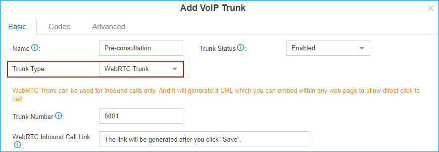
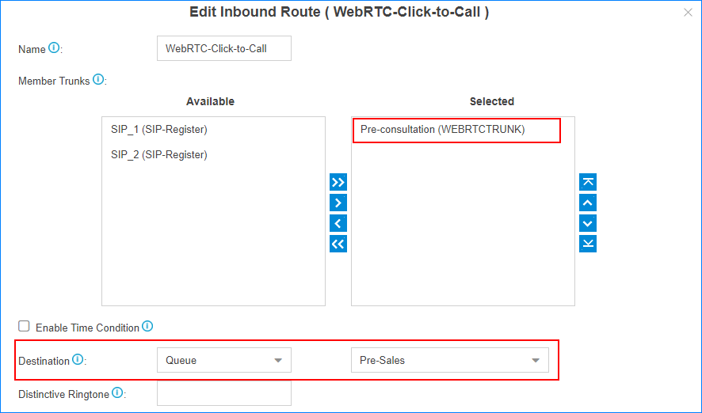
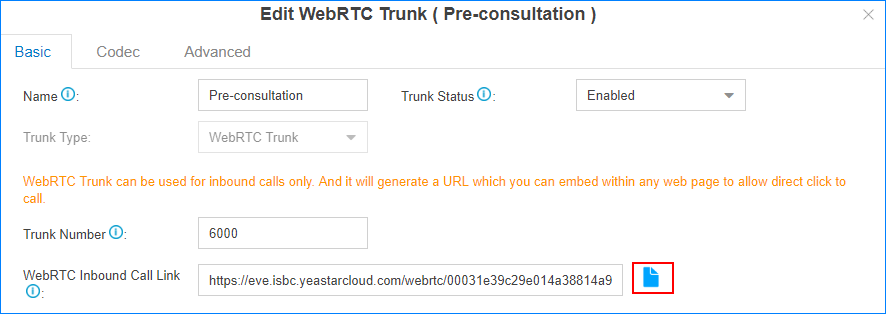
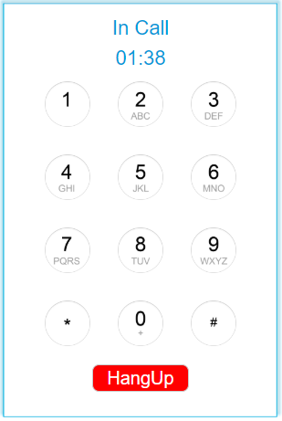

Set up WebRTC Click-to-Call
Create a WebRTC trunk on the PBX, and place the generated link in your website. When a website visitor clicks the link, a WebRTC call will be established between the visitor and the pre-configured destination of the PBX.
1. Set up a WebRTC Trunk
Set up a WebRTC trunk on the PBX, a link for the WebRTC trunk will be generated automatically.
- Go to , check the option Enable to enable WebRTC service on the PBX.
- Go to , click Add.
- On the trunk configuration page, set up a WebRTC trunk.

- Name: Set the trunk name. When a WebRTC
call is made through this trunk, the trunk name will be
displayed on the ringing endpoint. Note: The trunk name will remind you where the call comes from.
- Trunk Status: Select Enabled.
- Trunk Type: Select WebRTC Trunk.
- Trunk Number: Use the default number or change the number. When a WebRTC call is made through this trunk, the trunk number will be displayed on the ringing endpoint.
- WebRTC Inbound Call Link: You can place the link on your web page. When your website visitors click the link, they will be connected to the destination of this WebRTC trunk.
- Name: Set the trunk name. When a WebRTC
call is made through this trunk, the trunk name will be
displayed on the ringing endpoint.
- Click Save.
A link for the WebRTC trunk is generated.
- On the pop-up dialog, click Copy Now or Copy Later.
2. Set WebRTC Call Destination
Create an inbound route for the WebRTC trunk to route the WebRTC incoming calls. When the website visitors click to call from the web page, the calls will be routed to the configured destination.
- Go to , click Add.
- On the Inbound Route configuration page, configure inbound route for the
WebRTC trunk.

- Name: Set the inbound route name.
- Member Trunks: Select the WebRTC trunk to the Selected box.
- Enable Time Condition: Decide whether to
route the incoming calls based on time
conditions.
- Uncheck the option: the WebRTC calls will be routed to one destination without time limit.
- Check the option, you can set different destinations based on different time conditions.
- Destination: Select the inbound route destination.
- Distinctive Ringtone: Optional. This feature needs support from the phones. Distinctive ring tones help users recognize where the call is from.
- Click Save and Apply.
3. Place WebRTC Link on Your Website
Create an HTML button on your website, and set the button link to WebRTC link that is generated after you creating the WebRTC trunk.
- On the WebRTC turnk configuration page, click to copy the
WebRTC link.

- Paste the link your web browser, press Enter.
A dialpad will be displayed on the web page and the call will be connected to your pre-configured destination.
